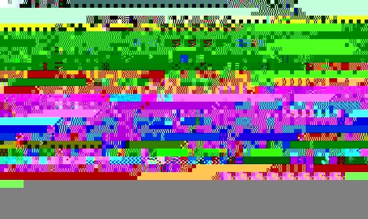

Eclipse Process Framework Composer is built on the Eclipse Integrated
Development Environment (IDE). The parts of the workspace are:

- Configuration drop-down selection box - The configuration drop-down
selection box allows you to select a configuration in which to work.
- Open Perspective button - Click the Open Perspective button
to select a perspective.
There are two perspectives to select from: The Browsing Perspective and the Authoring Perspective.
- Library View - The Library
View displays the Method Plug-ins and Configurations contained in a
Method Library.
- Configuration View - The Configuration View shows the content elements in a library
filtered by a configuration.
- Content Editors and Preview - When you are working in the Authoring
Perspective, the window on the right side of your screen contains content
editors, which allow you to create or modify element types. When the Browsing
Perspective is open, the window on the right contains a preview of
your content as it will appear in a published Web site.